Mapping Functions
Mauro Lepore
2018-01-03
This vignette shows the same code that you can find in the help files of map_sp(), map_quad() and map_tag(), but here (not in in the help files) you can see the output.
library(map)
library(fgeo.utils)
library(dplyr)##
## Attaching package: 'dplyr'## The following objects are masked from 'package:stats':
##
## filter, lag## The following objects are masked from 'package:base':
##
## intersect, setdiff, setequal, union# Avoid conflict with `stats::filter()`
filter <- dplyr::filter
map_sp(): Map species’ distribution
# Example data
census <- bciex::bci12t7mini
species <- c("hybapr", "faraoc")
# Defaults
p <- map_sp(census, species)
# Visualizing only the first plot of `p`
first(p)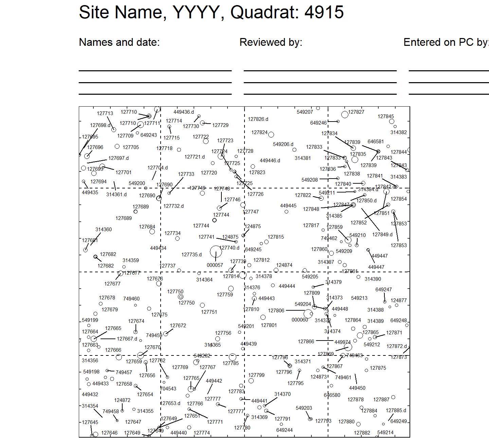
# Printing all plots of `p` to .pdf, with parameters optimized for size letter
pdf("map.pdf", paper = "letter", height = 10.5, width = 8)
p
#> $faraoc
#>
#> $hybapr
dev.off()
#> png
#> 2
# Simple tweaks
p <- map_sp(
census, species,
# Passed to ggplot2::geom_point()
size = 4, shape = 22, fill = "green", colour = "black", stroke = 2
)
first(p)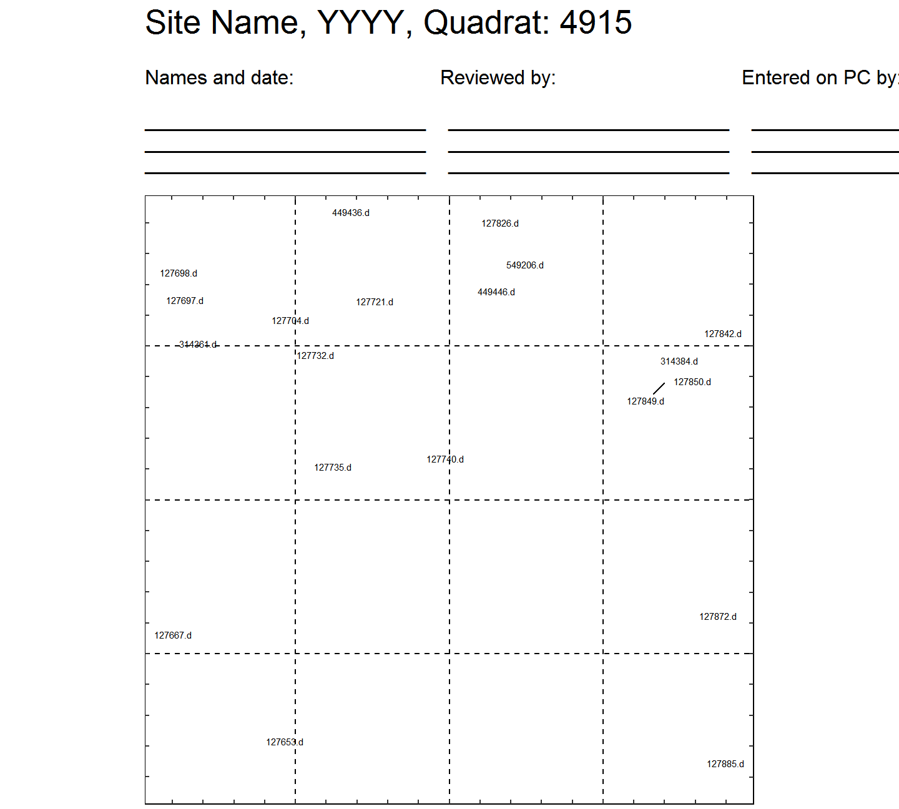
# Add elevation and tweak lines
# Fixing wrong names of elevation data
elevation <- rename(bciex::bci_elevation, gx = x, gy = y)
p <- map_sp(
census, species,
elevation = elevation, line_size = 1, low = "red", high = "blue", bins = 10
)
first(p)
# Dealing with overplotting
crowded <- tibble(
sp = sample(c("species1"), 10000, replace = TRUE),
gx = sample.int(1000, 10000, replace = TRUE),
gy = sample.int(500, 10000, replace = TRUE)
)
map_sp(crowded, c("species1"))
#> $species1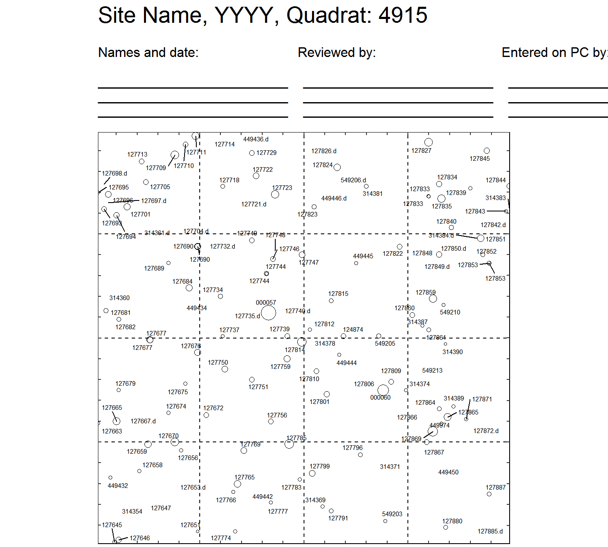
# Less overplotting
map_sp(crowded, c("species1"), size = 1, alpha = 5/10, shape = 21)
#> $species1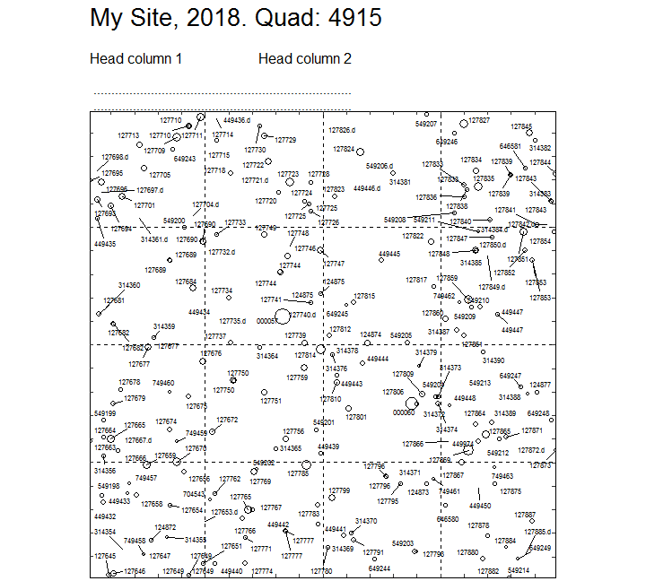
# Limits
p <- map_sp(census, species, xlim = c(0, 1500), ylim = c(0, 1000))
first(p)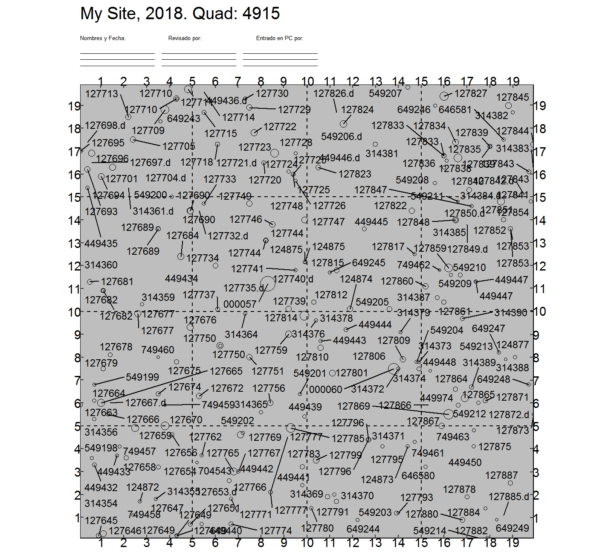
# Themes
library(ggplot2)
# Using pre-made themes
p <- map_sp(census, species, theme = ggplot2::theme_classic())
first(p)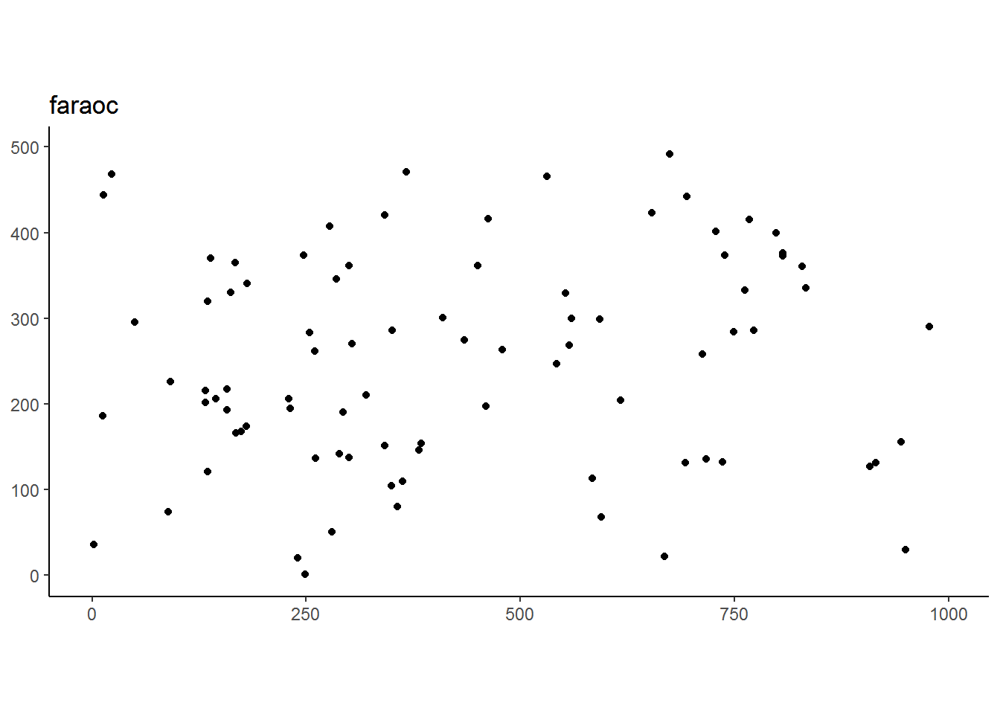
# Tweaking the default theme of map_sp()
small_tweak <- theme_map_sp(
text = element_text(size = 30, face = "bold.italic")
)
p <- map_sp(census, species, theme = small_tweak)
first(p)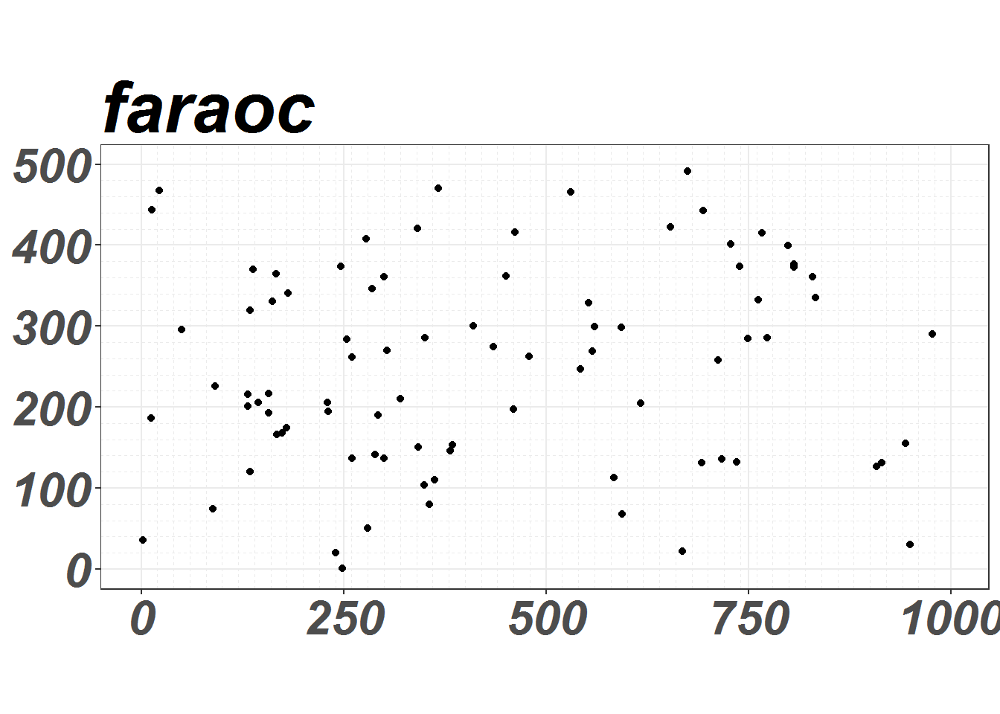
large_tweak <- theme(
legend.position = "bottom",
legend.title = element_blank(),
legend.text = element_text(size = 8, colour = "red"),
text = element_text(size = 11, face = "bold.italic", colour = "white"),
plot.background = element_rect(fill = "black"),
plot.margin = margin(2, 2, 2, 2, "cm"),
strip.background = element_rect(fill = "darkgreen"),
strip.text = element_text(colour = "white"),
panel.background = element_rect(fill = "lightgreen"),
panel.grid.minor = element_line(colour = "black", linetype = "dotted"),
panel.grid.major = element_line(colour = "black")
)
p <- map_sp(census, species, theme = large_tweak)
first(p)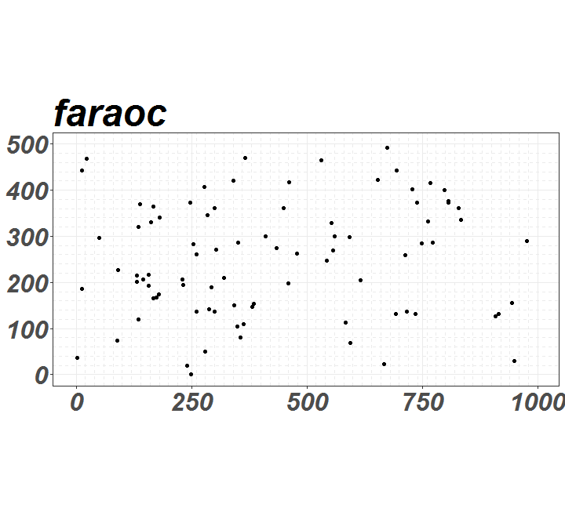
# Multiple maps per page
library(gridExtra)
four_species <- c("hybapr", "faraoc", "des2pa", "tri2tu")
p <- map_sp(census, four_species)
multipaged <- marrangeGrob(p, nrow = 1, ncol = 2)
# Printing all plots of `p` to .pdf, with parameters optimized for size letter
# Option 1
pdf("map.pdf", paper = "letter", height = 10.5, width = 8)
multipaged
dev.off()
#> png
#> 2
# Option 2
ggsave("map.pdf", multipaged, height = 10.5, width = 8)
# Extending with ggplot2
p0 <- map_sp(census, species)
# Adding new layer to one element of the plots' list
p0[["hybapr"]] + geom_vline(aes(xintercept = 300), colour = "red")
# Adding new layer to all elements of the plots' list
# * Adding a vertical line
p1 <- lapply(p0, `+`, geom_vline(aes(xintercept = 300), colour = "red"))
marrangeGrob(p1, nrow = 2, ncol = 1)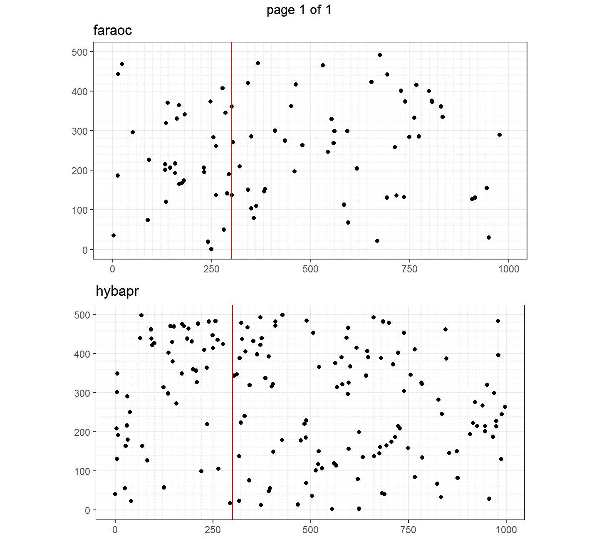
# * Also adding a horizontal line
p2 <- lapply(p1, `+`, geom_hline(aes(yintercept = 400), colour = "blue"))
marrangeGrob(p2, nrow = 2, ncol = 1)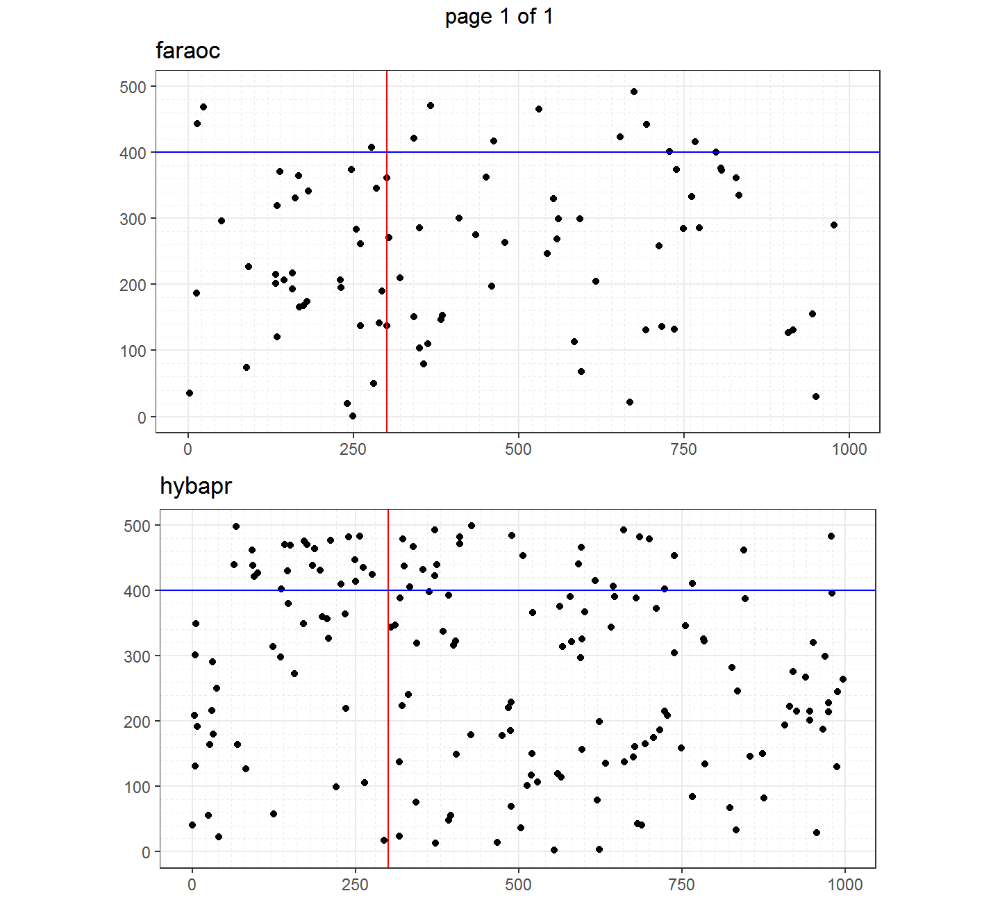
map_quad(): Map trees within a quadrat
# Filter the data you want. For example:
# (see ?top4quad)
want <- filter(
top4quad,
CensusID == 6,
PlotID == 1
)
p <- map_quad(want)
#> * Appending tags of dead trees with the suffix '.d'
#> * Standarizing `dbh` by the count of `dbh` measurements
# Visualizing only the first plot of `p`
first(p)
#> Warning: Removed 34 rows containing missing values (geom_point).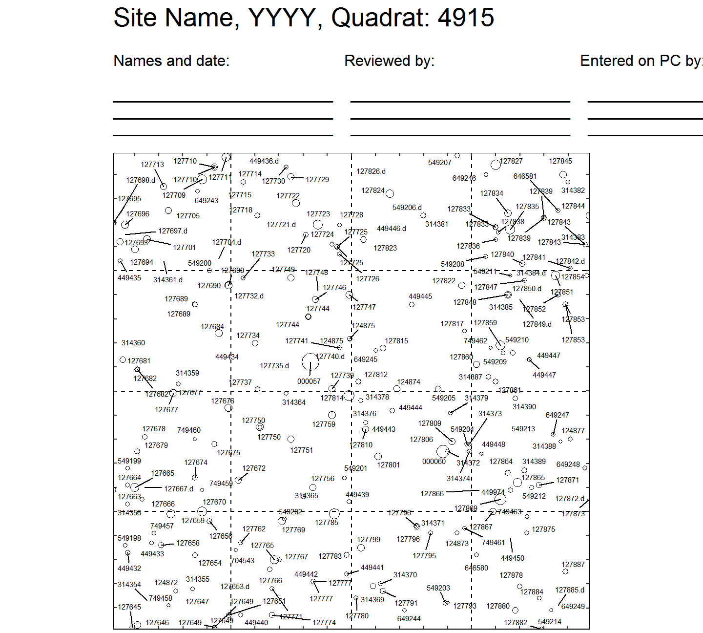
# Printing all plots of `p` to .pdf, with parameters optimized for size letter
pdf("map.pdf", paper = "letter", height = 10.5, width = 8)
p
#> $`4915`
#> Warning: Removed 34 rows containing missing values (geom_point).
#>
#> $`4916`
#> Warning: Removed 30 rows containing missing values (geom_point).
#>
#> $`4917`
#> Warning: Removed 32 rows containing missing values (geom_point).
#>
#> $`4918`
#> Warning: Removed 46 rows containing missing values (geom_point).
dev.off()
#> png
#> 2
# Be careful if filtering by DBH: You may unintentionally remove dead trees.
# * Confirm this dataset has dead trees:
# (see `?top4quad`)
dead <- top4quad %>%
add_status_tree() %>%
top(QuadratID) %>%
filter(status_tree == "dead")
select(dead, Tag, Status, status_tree, DBH)
#> # A tibble: 20 x 4
#> Tag Status status_tree DBH
#> <chr> <chr> <chr> <int>
#> 1 127653 dead dead NA
#> 2 127667 dead dead NA
#> 3 127697 dead dead NA
#> 4 127698 dead dead NA
#> 5 127704 dead dead NA
#> 6 127721 dead dead NA
#> 7 127732 dead dead NA
#> 8 127735 dead dead NA
#> 9 127740 dead dead NA
#> 10 127826 dead dead NA
#> 11 127842 dead dead NA
#> 12 127849 dead dead NA
#> 13 127850 dead dead NA
#> 14 127872 dead dead NA
#> 15 127885 dead dead NA
#> 16 314361 dead dead NA
#> 17 314384 dead dead NA
#> 18 449436 dead dead NA
#> 19 449446 dead dead NA
#> 20 549206 dead dead NA
map_quad(dead)
#> * Appending tags of dead trees with the suffix '.d'
#> * Standarizing `dbh` by the count of `dbh` measurements
#> $`4915`
#> Warning: Removed 20 rows containing missing values (geom_point).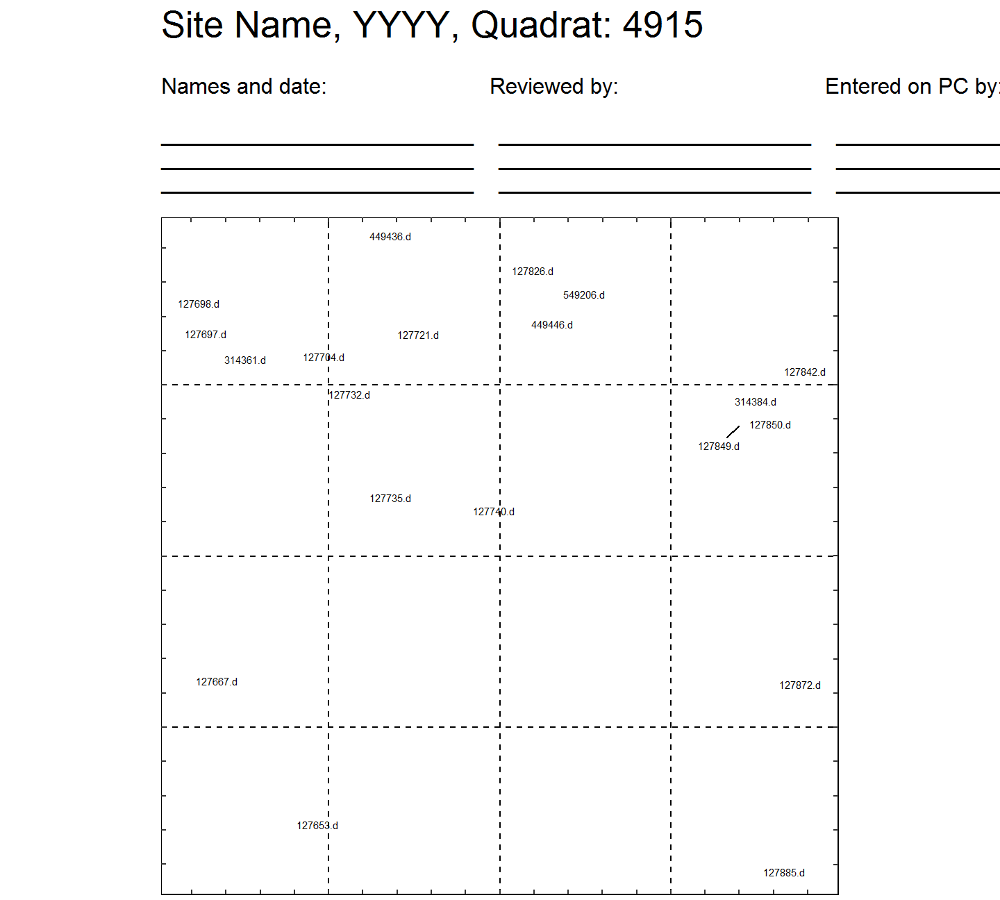
# * If you filter by `DBH`, you loose the dead trees becaue their `DBH = NA`
wrong <- filter(dead, DBH > 10)
map_quad(wrong)
#> * Appending tags of dead trees with the suffix '.d'
#> Warning in tag_dead(crucial$tag, crucial$status): No stem is dead. Is that
#> what you expect?
#> * Standarizing `dbh` by the count of `dbh` measurements
#> named list()
# * The right way to do it is to explicietly inlcude rows where DBH = NA
right <- filter(dead, DBH > 10 | is.na(DBH))
map_quad(right)
#> * Appending tags of dead trees with the suffix '.d'
#> * Standarizing `dbh` by the count of `dbh` measurements
#> $`4915`
#> Warning: Removed 20 rows containing missing values (geom_point).
# Keeping dead trees with `is.na(DBH)` (e.g. tag 127885.d on the bottom right)
p <- filter(top4quad, DBH > 20 | is.na(DBH))
first(map_quad(p))
#> * Appending tags of dead trees with the suffix '.d'
#> * Standarizing `dbh` by the count of `dbh` measurements
#> Warning: Removed 34 rows containing missing values (geom_point).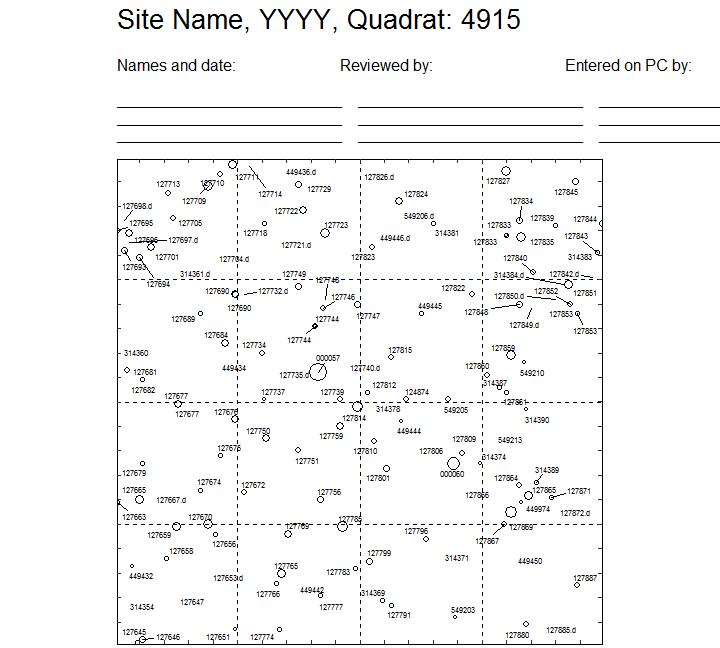
# For more complex filtering, see also ?fgeo.utils::rm_dead_twice)
multiple_censuses <- bciex::bci12vft_mini
nrow(multiple_censuses)
#> [1] 4374
nrow(rm_dead_twice(multiple_censuses))
#> [1] 2300
# Customizing the maps ----------------------------------------------------
# A custom title and header
myheader <- paste(
" ",
"Head column 1 Head column 2 ",
" ",
" ........................................................................",
" ........................................................................",
sep = "\n"
)
# See ?top1quad
map_quad(top1quad, title_quad = "My Site, 2018. Quad:", header = myheader)
#> * Appending tags of dead trees with the suffix '.d'
#> * Standarizing `dbh` by the count of `dbh` measurements
#> $`4915`
#> Warning: Removed 34 rows containing missing values (geom_point).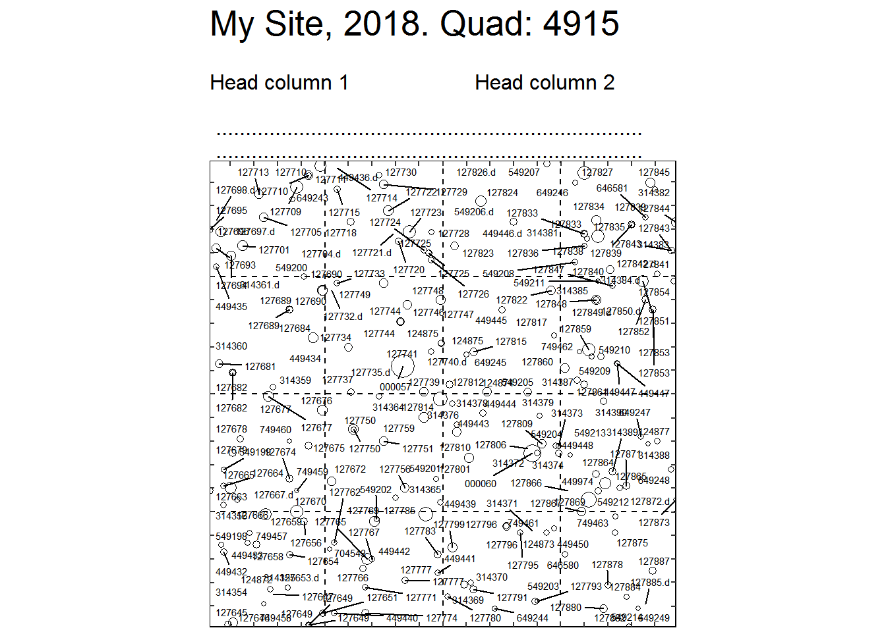
# Tweak the theme with ggplot
library(ggplot2)
map_quad(
top1quad,
title_quad = "My Site, 2018. Quad:",
header = map_quad_header("spanish"),
tag_size = 3,
theme = theme_map_quad(
axis.text = NULL, # NULL shows axis.text; element_blank() doesn't.
plot.title = element_text(size = 15),
plot.subtitle = element_text(size = 5),
panel.background = element_rect(fill = "grey")
)
)
#> * Appending tags of dead trees with the suffix '.d'
#> * Standarizing `dbh` by the count of `dbh` measurements
#> $`4915`
#> Warning: Removed 34 rows containing missing values (geom_point).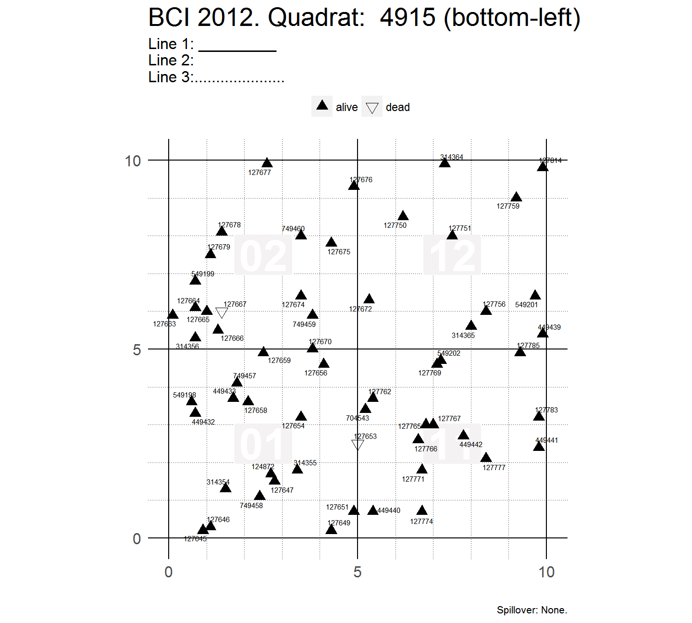
map_tag(): Map tree tags by status
# Filtering the data to map -----------------------------------------------
# Filter the data you want. For example:
# (see ?top1quad)
want <- filter(
top1quad,
CensusID == 6,
PlotID == 1
)
p <- map_tag(want)
# Visualizing only the first plot of `p`
first(p)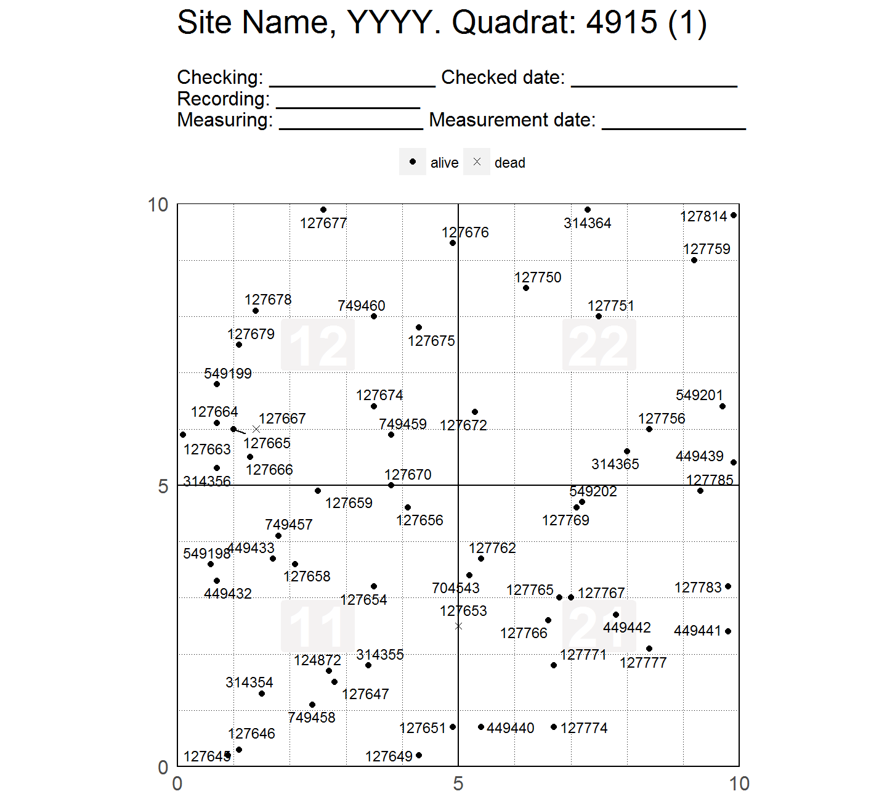
# Printing all plots of `p` to .pdf, with parameters optimized for size letter
pdf("map.pdf", paper = "letter", height = 10.5, width = 8)
p
#> $`4915_1`
#>
#> $`4915_2`
#>
#> $`4915_3`
#>
#> $`4915_4`
dev.off()
#> png
#> 2
# Be careful if filtering by DBH: You may unintentionally remove dead trees.
# * Confirm this dataset has dead trees:
# (see `?top4quad`)
dead <- top4quad %>%
add_status_tree() %>%
top(QuadratID) %>%
filter(status_tree == "dead")
select(dead, Tag, Status, status_tree, DBH)
#> # A tibble: 20 x 4
#> Tag Status status_tree DBH
#> <chr> <chr> <chr> <int>
#> 1 127653 dead dead NA
#> 2 127667 dead dead NA
#> 3 127697 dead dead NA
#> 4 127698 dead dead NA
#> 5 127704 dead dead NA
#> 6 127721 dead dead NA
#> 7 127732 dead dead NA
#> 8 127735 dead dead NA
#> 9 127740 dead dead NA
#> 10 127826 dead dead NA
#> 11 127842 dead dead NA
#> 12 127849 dead dead NA
#> 13 127850 dead dead NA
#> 14 127872 dead dead NA
#> 15 127885 dead dead NA
#> 16 314361 dead dead NA
#> 17 314384 dead dead NA
#> 18 449436 dead dead NA
#> 19 449446 dead dead NA
#> 20 549206 dead dead NA
first(map_tag(dead))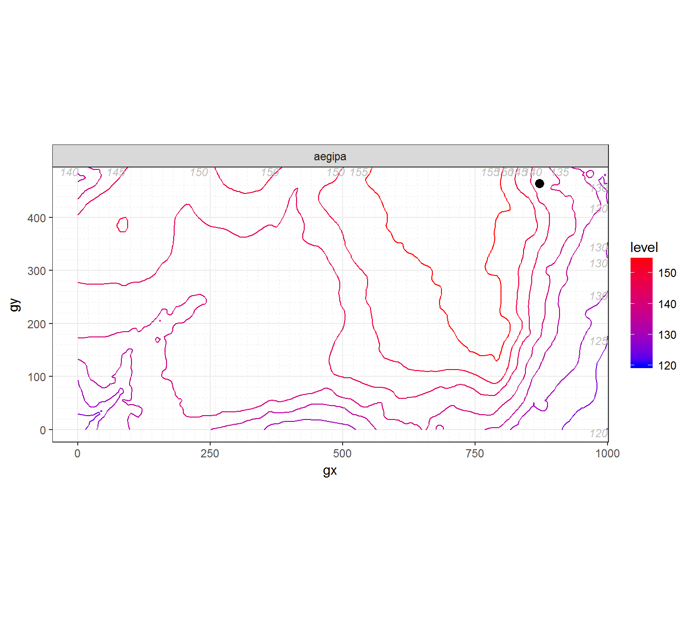
# * If you filter by `DBH`, you loose the dead trees becaue their `DBH = NA`
wrong <- filter(dead, DBH > 10)
wrong
#> # A tibble: 0 x 29
#> # ... with 29 variables: MeasureID <int>, PlotID <int>, Plot <chr>,
#> # Family <chr>, GenusSpecies <chr>, Genus <chr>, SpeciesName <chr>,
#> # SubSpeciesName <chr>, SpeciesID <int>, Mnemonic <chr>,
#> # QuadratID <int>, QuadratName <chr>, QX <dbl>, QY <dbl>, gx <dbl>,
#> # gy <dbl>, TreeID <int>, Tag <chr>, StemID <int>, StemTag <chr>,
#> # PrimaryStem <chr>, CensusID <int>, PlotCensusNumber <int>, DBH <int>,
#> # HOM <dbl>, ExactDate <date>, ListOfTSM <chr>, Status <chr>,
#> # status_tree <chr>
# * The right way to do it is to explicietly inlcude rows where DBH = NA
right <- filter(dead, DBH > 10 | is.na(DBH))
right
#> # A tibble: 20 x 29
#> MeasureID PlotID Plot Family
#> <int> <int> <chr> <chr>
#> 1 79602 1 bci Meliaceae
#> 2 79613 1 bci Melastomataceae
#> 3 79636 1 bci Capparaceae
#> 4 79637 1 bci Ochnaceae
#> 5 79639 1 bci Burseraceae
#> 6 79650 1 bci Capparaceae
#> 7 79660 1 bci Chrysobalanaceae
#> 8 79663 1 bci Violaceae
#> 9 79666 1 bci Violaceae
#> 10 79708 1 bci Violaceae
#> 11 79720 1 bci Fabaceae-papilionoideae
#> 12 79727 1 bci Violaceae
#> 13 79728 1 bci Fabaceae-papilionoideae
#> 14 79743 1 bci Clusiaceae
#> 15 79750 1 bci Violaceae
#> 16 192560 1 bci Sapotaceae
#> 17 192575 1 bci Violaceae
#> 18 223605 1 bci Burseraceae
#> 19 223613 1 bci Rubiaceae
#> 20 242691 1 bci Melastomataceae
#> # ... with 25 more variables: GenusSpecies <chr>, Genus <chr>,
#> # SpeciesName <chr>, SubSpeciesName <chr>, SpeciesID <int>,
#> # Mnemonic <chr>, QuadratID <int>, QuadratName <chr>, QX <dbl>,
#> # QY <dbl>, gx <dbl>, gy <dbl>, TreeID <int>, Tag <chr>, StemID <int>,
#> # StemTag <chr>, PrimaryStem <chr>, CensusID <int>,
#> # PlotCensusNumber <int>, DBH <int>, HOM <dbl>, ExactDate <date>,
#> # ListOfTSM <chr>, Status <chr>, status_tree <chr>
first(map_quad(right))
#> * Appending tags of dead trees with the suffix '.d'
#> * Standarizing `dbh` by the count of `dbh` measurements
#> Warning: Removed 20 rows containing missing values (geom_point).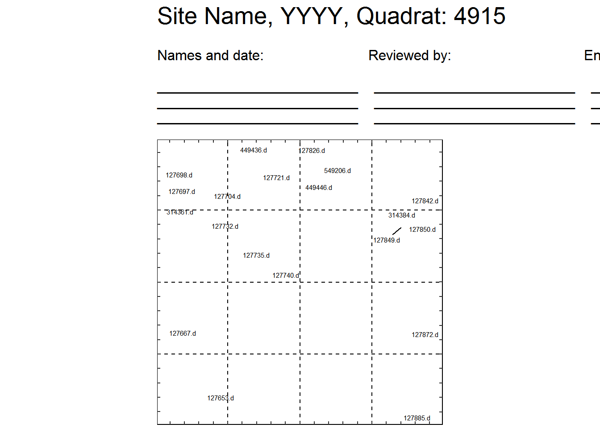
# Keeping dead trees with `is.na(DBH)` (e.g. tag 127885.d on the bottom right)
p <- filter(top4quad, DBH > 20 | is.na(DBH))
first(map_tag(p))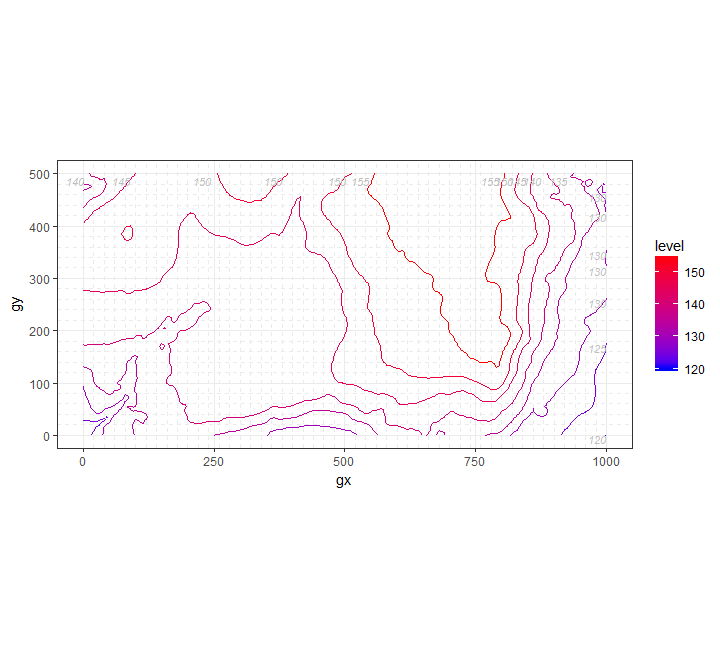
# For more complex filtering, see also ?fgeo.utils::rm_dead_twice
multiple_censuses <- bciex::bci12vft_mini
nrow(multiple_censuses)
#> [1] 4374
nrow(rm_dead_twice(multiple_censuses))
#> [1] 2300
# Customizing the maps ----------------------------------------------------
# Common tweaks
p <- map_tag(top1quad, show_page = FALSE, show_subquad = FALSE)
first(p)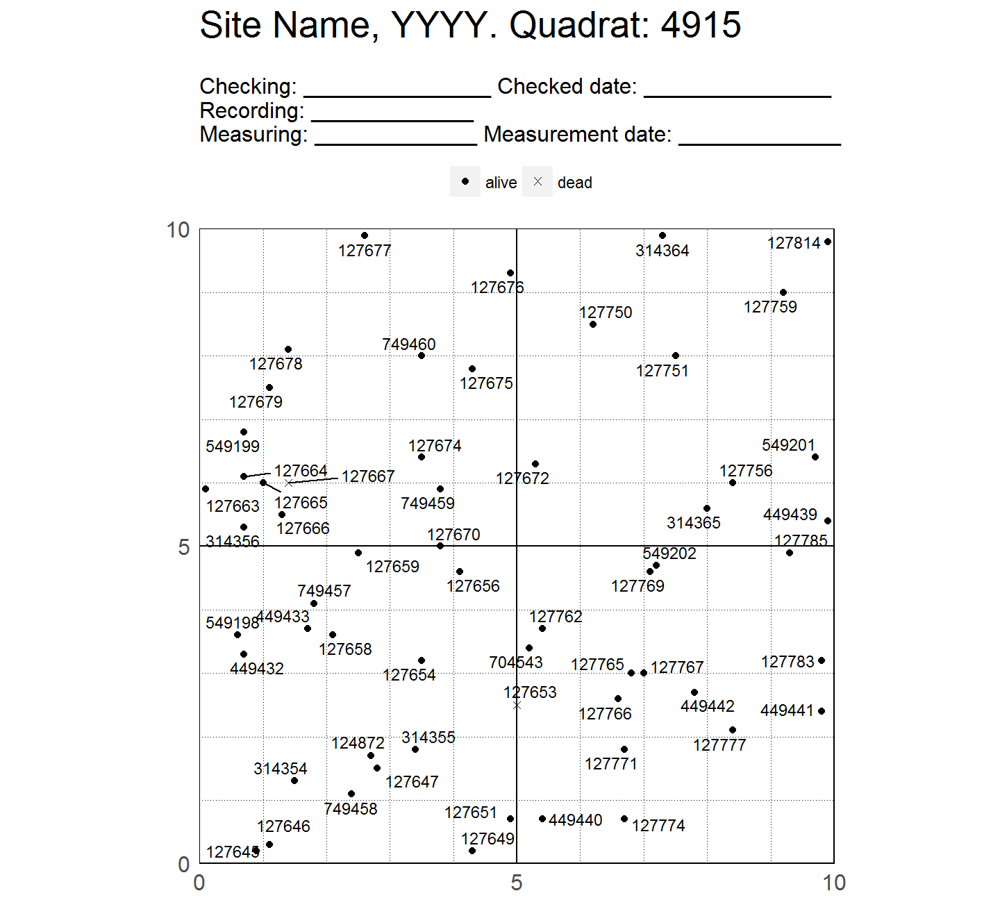
p <- map_tag(
top1quad,
title_quad = "BCI 2012. Quadrat: ",
bl = "bottom-left", br = "bottom-right", tr = "top-right", tl = "top-left",
header = "Line 1: _________\nLine 2:\nLine 3:.....................",
subquad_offset = -1,
point_size = 3, point_shape = c(17, 6),
tag_size = 2,
move_edge = 0.5
)
first(p)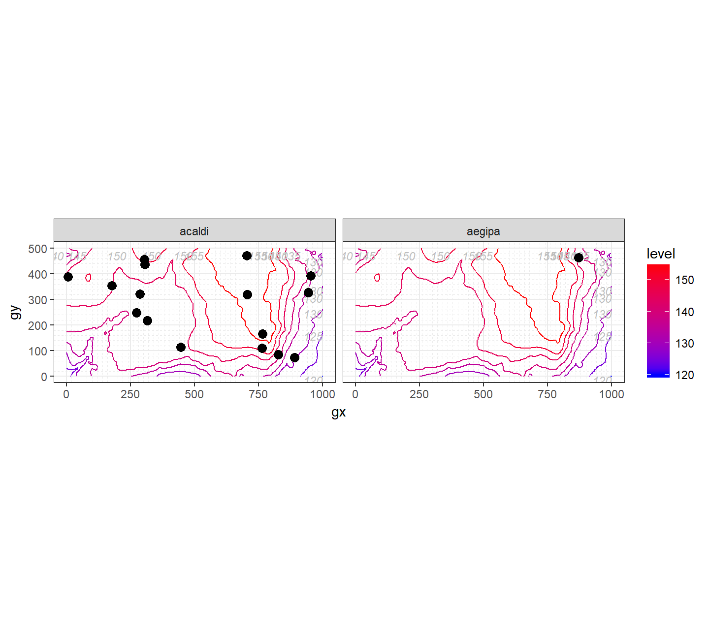
# Themes
library(ggplot2)
p <- map_tag(top1quad, theme = theme_gray())
first(p)
# Tweaking the default theme of map_tag()
small_tweak <- theme_map_tag(legend.position = "bottom")
p <- map_tag(top1quad, theme = small_tweak)
first(p)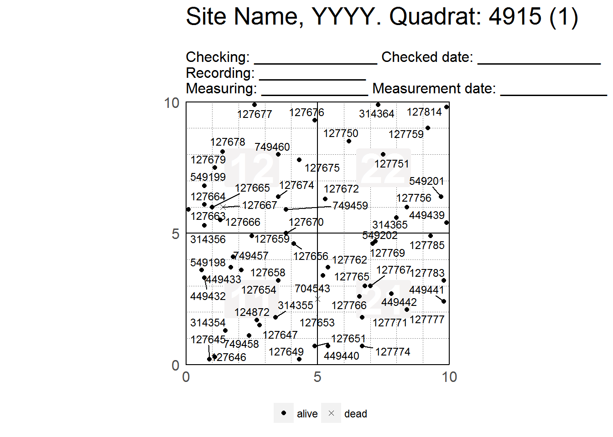
large_tweak <- theme(
legend.position = "bottom",
legend.title = element_blank(),
legend.text = element_text(size = 8, colour = "red"),
text = element_text(size = 11, face = "bold.italic", colour = "white"),
plot.background = element_rect(fill = "black"),
plot.margin = margin(2, 2, 2, 2, "cm"),
strip.background = element_rect(fill = "darkgreen"),
strip.text = element_text(colour = "white"),
# make grid to dissapear by matching background colour
panel.background = element_rect(fill = "lightgreen"),
panel.grid.minor = element_line(colour = "black", linetype = "dotted"),
panel.grid.major = element_line(colour = "black")
)
p <- map_tag(top1quad, theme = large_tweak)
first(p)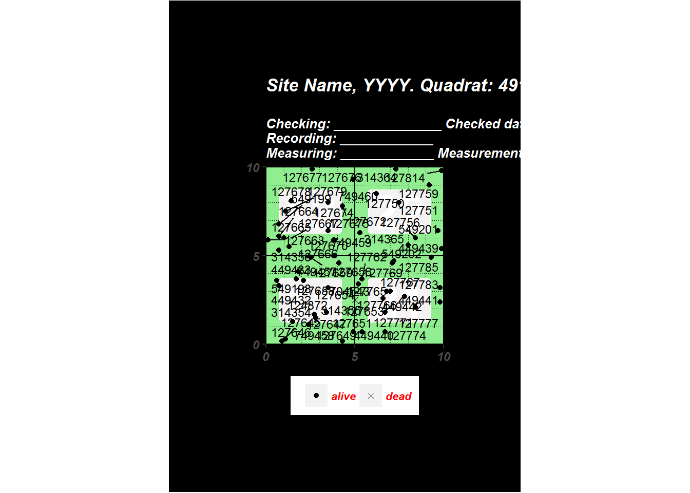
# Quadrat and subquadrat dimensitons
# Adapting the dimensions of quadrat and subquadrat to the range of qx and qy
# Creating new data set with QX and QY ranging 0-100
smaller <- top1quad
n <- nrow(smaller)
smaller$QX <- sample(0:10, n, replace = TRUE)
smaller$QY <- sample(0:10, n, replace = TRUE)
p <- map_tag(smaller, x_q = 10, x_sq = 2.5)
first(p)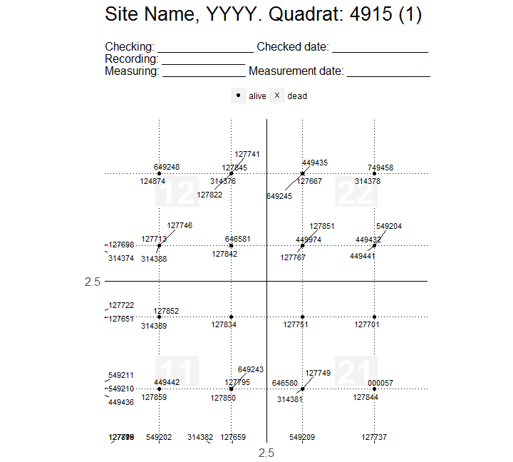
# If limit-lines aren't visible, try extending the grid a little
p <- map_tag(smaller, x_q = 10, x_sq = 2.5, move_edge = 0.25)[1]
first(p)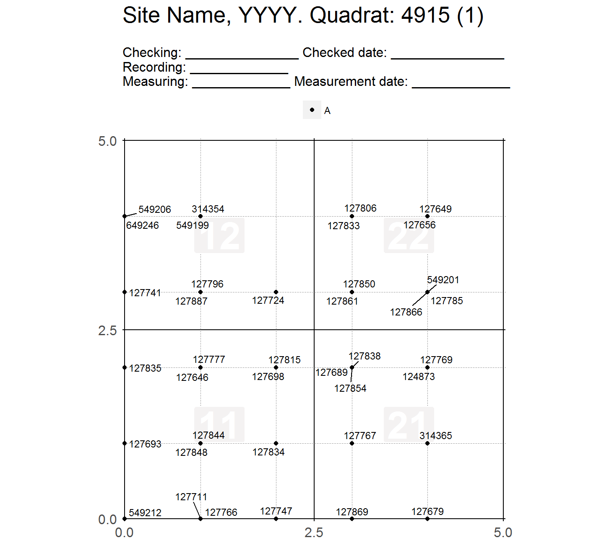